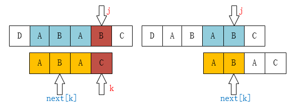

k = next[k]的理解

如上图所示 T[j]≠T[k]，这时情况变成找出BAB和ABAC（分别在必须包括最后一个和必须包括最前一个情况下）两者的最长子串。这里可以看作子串ABAC在DABABC…里面找符合的位置，因此把k（可以理解为在子串查找算法中的j）指向了next[k]。
//next数组获取
void get_next(String T,int *next)
{ int i=1,k=0;
next[1]=0;
while(i<T[0])
{
if(k==0 || T[i]==T[k])
{
++i;
++K;
next[i]=k;
}
else
k=next[k];
}
}//子串位置获取
int Index_KMP(String S,String T,int pos)
{
int i=pos,j=1,next[255];
get_next(T,next);
while(i<=S[0]&&j<=T[0])
{
if(j==0 || S[i]==T[j])
{
++i;
++j;
}
else
{
j=next[j] //这就是上文说到的把k看作j的j
}
}
if(j>T[0])
return i-T[0];
else
return 0;
}nextval数组值的理解
若字符串内存在连续循环的子串则说明后面验证失败前面也必然会验证失败，故未避免多余判断直接用前端最前的一个相等序数的next值代替原有next值生成新的数值nextval。
- 記事へのリンク：http://example.com/2021/07/16/KPM%E7%AE%97%E6%B3%95%E7%90%86%E8%A7%A3/
- 著作権表示：このブログ内のすべての記事は、特別な記載がない限り の下のライセンスで保護されています。